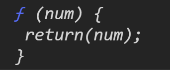
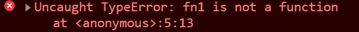

IIFEs
立即被呼叫的函式 (Immediately Invoked Function Expression, IIFE)，
Immediately 是立即的意思，invoked 則是執行某個函式時，「執行」的意思，function expression 是一種用來建立 function 的方法，總括來說，就是用 function expression 的方式建立函式後並立即執行它。
Function Statement 和 Function Expression
以下為 Function Statement 和 Function Expression 的範例：
1 | // function statement |
先來看一下範例，印出 fn1() 的內容：
1 | // function expression |
呼叫 fn1() 後，它會回傳整個函式的內容，這是尚未 執行（Invoked）的結果。
如果是 IIFEs 就在這段程式碼的最後，加上一個執行的指令，也就是括號 ( )：
1 | var fn1 = function(num) { |
在我們建立函式的同時，這段函式就會立即被執行了，印出 10 。
試著把 function 裡面的 console.log 改成 return
原本 function expression 的程式碼如下：
1 | // function expression |
可以發現結果還是一個函式：

如果把它改成 IIFEs 的話，就會得到 10 ：
1 | // Immediately Invoked Functions Expressions (IIFEs) |
在利用 IIFE 的寫法後，原本的變數 fn1 已經變成函式執行後回傳的「Number」，它已經是數字而不是 function ，如果還使用 () 去 Invoke(執行) 的話會出現錯誤。
1 | // Immediately Invoked Functions Expressions (IIFEs) |
產生錯誤：

下面的範例，我們建立了一個匿名函式，並且透過 IIFEs 馬上執行：
1 | var value= 1; |
以下為執行結果：
1 | 3 |
由執行結果可看到，在IIFEs中所建立的變數，不會影響到 Global Execution Context 所建立的變數，也就是說，透過IIFEs，達成不同 execution context 的變數之間不會互相影響。
不過我們可以透過填入物件 window ，直接針對 window 裡面的物件去做改變：
1 | var value= 1; |
結果如下，成功變更在 Global Execution Context 的 value 為 4：
1 | 3 |